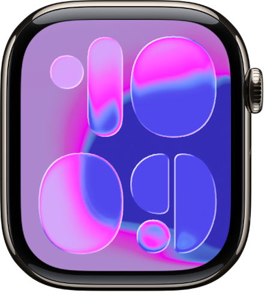

这款表盘让 Liquid Glass 触手可及。色彩缤纷的抽象背景会跟随你的动作旋转律动。
下方的文件数包括本地化资源。固件名称键能确认包的归属；组件的圆屏点击边界、亮屏过渡与 AOD 对照均待设备验证。
原始包 已解析属性表 Mach-O 方法与成员 ARM64 汇编
.strings × 132 .plist × 3 .metallib × 2 无扩展名 × 1
NTKWarlockFaceBundle.bundleWARLOCK_FACE_DESCRIPTIONhwBlackhwDarkBronzehwLightGoldhwSpaceGrayhero01hero05hero02jetblackhero03hero04silverrosegoldnaturalWARLOCK_EDIT_OPTION_TYPEFACE_SOLIDWARLOCK_EDIT_OPTION_BACKGROUND_OFFWARLOCK_EDIT_OPTION_BACKGROUND_ONWARLOCK_EDIT_OPTION_TYPEFACE_STENCIL色组与设备条件 Warlock-F2026.color.plist Warlock.color.plist 共享色组与默认值
+[WarlockFaceAnimatorStep stepWithTritiumOnFrameRange:tritiumOffFrameRange:onBlock:offBlock:];-[WarlockFaceAnimatorStep setIsTritiumOn:progress:faceView:];-[WarlockFaceAnimatorStep setTritiumOffTickBlock:];-[WarlockFaceAnimatorStep setTritiumOnTickBlock:];-[WarlockFaceAnimatorStep tritiumOffTickBlock];-[WarlockFaceAnimatorStep tritiumOnTickBlock];-[WarlockFaceAnimatorStep willTransitionToTritiumOffFromFaceView:];-[WarlockFaceAnimatorStep willTransitionToTritiumOnFromFaceView:];-[_TtC20NTKWarlockFaceBundle15WarlockFaceView tritium_didTransitionToTritiumOn];-[_TtC20NTKWarlockFaceBundle15WarlockFaceView tritium_didTransitionToTritiumOff];-[_TtC20NTKWarlockFaceBundle15WarlockFaceView tritium_createFaceAnimator];-[_TtC20NTKWarlockFaceBundle15WarlockFaceView tritium_alwaysOnTimelines];-[_TtC20NTKWarlockFaceBundle15WarlockFaceView tritium_transitionToFrameSpecifier:];-[_TtC20NTKWarlockFaceBundle15WarlockFaceView tritium_timeViews];+[WarlockFaceAnimatorStep stepWithTritiumOnFrameRange:tritiumOffFrameRange:onBlock:offBlock:];-[WarlockFaceAnimatorStep setIsTritiumOn:progress:faceView:];-[WarlockFaceAnimatorStep setTritiumOffTickBlock:];-[WarlockFaceAnimatorStep setTritiumOnTickBlock:];-[WarlockFaceAnimatorStep tritiumOffTickBlock];-[WarlockFaceAnimatorStep tritiumOnTickBlock];-[WarlockFaceAnimatorStep willTransitionToTritiumOffFromFaceView:];-[WarlockFaceAnimatorStep willTransitionToTritiumOnFromFaceView:];-[_TtC20NTKWarlockFaceBundle15WarlockFaceView tritium_didTransitionToTritiumOn];-[_TtC20NTKWarlockFaceBundle15WarlockFaceView tritium_didTransitionToTritiumOff];-[_TtC20NTKWarlockFaceBundle15WarlockFaceView _applyTransitionFraction:fromOption:toOption:forCustomEditMode:slot:];-[_TtC20NTKWarlockFaceBundle15WarlockFaceView tritium_createFaceAnimator];-[_TtC20NTKWarlockFaceBundle15WarlockFaceView tritium_alwaysOnTimelines];-[_TtC20NTKWarlockFaceBundle15WarlockFaceView tritium_transitionToFrameSpecifier:];-[_TtC20NTKWarlockFaceBundle15WarlockFaceView screenWillTurnOnAnimated:];-[_TtC20NTKWarlockFaceBundle15WarlockFaceView screenDidTurnOffAnimated:];-[_TtC20NTKWarlockFaceBundle11WarlockFace curatedGalleryBackgroundColors];-[_TtC20NTKWarlockFaceBundle11WarlockFace _numberOfOptionsForCustomEditMode:slot:];-[_TtC20NTKWarlockFaceBundle11WarlockFace _defaultOptionForCustomEditMode:slot:];-[_TtC20NTKWarlockFaceBundle11WarlockFace _indexOfOption:forCustomEditMode:slot:];-[_TtC20NTKWarlockFaceBundle11WarlockFace _optionAtIndex:forCustomEditMode:slot:];-[_TtC20NTKWarlockFaceBundle15WarlockFaceView createFaceColorPalette];-[_TtC20NTKWarlockFaceBundle15WarlockFaceView _applyTransitionFraction:fromOption:toOption:forCustomEditMode:slot:];-[_TtC20NTKWarlockFaceBundle15WarlockFaceView layoutSubviews];-[_TtC20NTKWarlockFaceBundle15WarlockFaceView _applyBreathingFraction:forCustomEditMode:slot:];-[_TtC20NTKWarlockFaceBundle15WarlockFaceView _applyOption:forCustomEditMode:slot:];-[_TtC20NTKWarlockFaceBundle15WarlockFaceView _prepareForEditing];-[_TtC20NTKWarlockFaceBundle15WarlockFaceView _cleanupAfterEditing];-[_TtC20NTKWarlockFaceBundle15WarlockFaceView _hideTimeAndComplicationsInHomeScreen];-[_TtC20NTKWarlockFaceBundle15WarlockFaceView _applyRubberBandingFraction:forCustomEditMode:slot:];-[_TtC20NTKWarlockFaceBundle19WarlockColorPalette swatchImageForSize:];-[_TtC20NTKWarlockFaceBundle19WarlockColorPalette init];-[_TtC20NTKWarlockFaceBundle19WarlockColorPalette initWithDomainName:inBundle:];-[_TtC20NTKWarlockFaceBundle19WarlockColorPalette initWithFaceClass:];-[_TtC20NTKWarlockFaceBundle20WarlockMiniClockView layoutSubviews];